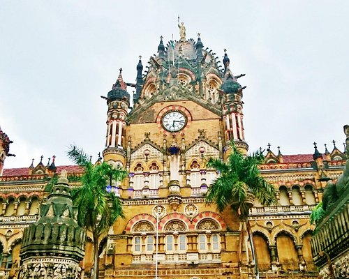

Mumbai, formerly Bombay, city, capital of Maharashtra state, southwestern India.
It is the country's financial and commercial centre and its principal port on the Arabian Sea.
Mumbai, long the centre of India's cotton textile industry, subsequently developed a highly diversified manufacturing sector that included an increasingly important information technology (IT) component. In addition, the city's commercial and financial institutions are strong and vigorous, and Mumbai serves as the country's financial hub.
The natural beauty of Mumbai is unsurpassed by that of most other cities in the region. The entrance into Mumbai Harbour from the sea discloses a magnificent panorama framed by the Western Ghats mountain range on the mainland. The wide harbour, studded with islands and dotted with the white sails of innumerable small craft, affords secure shelter to ships, particularly when storms lash the coast. The largest of the harbour's islands is Elephanta, which is famous for its 8th- and 9th-century Hindu cave temples.
The name Mumbai is derived from Maha Amba or Mumba - the name of the patron goddess Mumba Devi of the native Koli community. Mumbai, also known as Bombay, is the capital city of the Indian state of Maharashtra and the "de facto" financial state of India.
Population : Mumbai is the sixth most populous metropolitan area in the world with a population of over 23 million. It was named an alpha world city and has the highest number of millionaires and billionaires among all cities in India.
Cosmopolitan Culture : Mumbai has a blend of traditional and cosmopolitan cultures due to its history as a major trading centre, resulting in a diverse range of cultures, religions and cuisines coexisting in the city.
Indian Cinema : The city of Mumbai is the birthplace of Indian cinema. It has contemporary art featured in art spaces and private commercial galleries.The Hindi film industry based in Mumbai, called Bollywood, produces nearly 170 to 200 films every year. Slumdog Millionaire, an English-language British film, was shot entirely in Mumbai and bagged 8 Oscar Awards.
Beaches : Beaches are a major tourist attraction in the city. Juhu Beach, Aksa Beach and Marve Beach are some of the well-known beaches in the city.